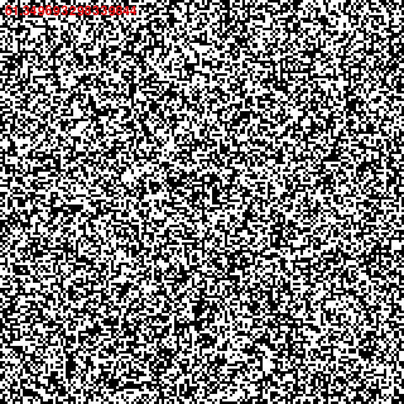

Automate cellulaire des voisins de Moore
Compétences techniques
- Python
- Visual studio code
- Pygame
- Algorithmie
Compétence transversale
- Recherche
Détails :
Ce projet est une implémentation d'un automate cellulaire, algorithme dans lequel on utilise des cellules qui intéragissent entre elles en fonction de leurs voisins et de règles. Le but de ce projet a été de découvrir les automates cellulaires pour la création de terrain dans un jeu. Ce projet a été réalisé en python en utilisant la librairie graphique pygame et a été réalisé au début de l'année 2022 en une après-midi comme expérimentation.
